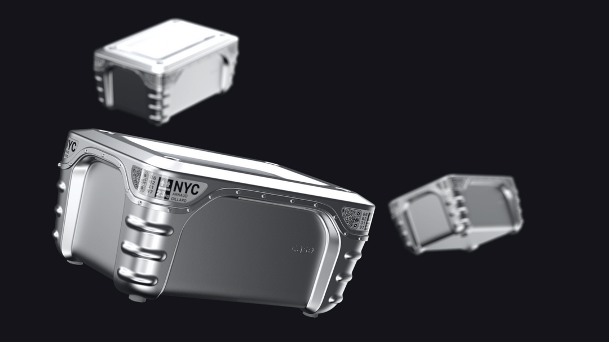

OTHER PROJECTS
Herd is a service that helps people maintain their mobility in times of crisis. It connects those in need to other members of their community who can provide help and resources.
Current Side Project (Live)
Herd
A speculative design project aimed at envisioning what the future of democracy could look like in the digital age.
Uni Project
LoudVoices
Dots is a recently released side project that acts as a tool to help users discover hidden patterns effortlessly. The strength of Dots lies in its simplicity and adaptability allowing users to track pretty much anything whether it is their mood, migraines, workouts, traffic, weather, surfing conditions and more.
Side Project
Dots
Lucid Motors is a Californian based automotive startup that is developing some of the world's leading electric vehicles.
I work as a Sr. Product Designer in the UX Design Team currently focussing on developing the future of Lucid's Autonomous Drive Assist Capabilities.
I work as a Sr. Product Designer in the UX Design Team currently focussing on developing the future of Lucid's Autonomous Drive Assist Capabilities.
Current Job

Lucid
Arrival is a technology company developing the future of mobility with a disruptive approach to manufacturing (Automated Microfactories).
I'm part of a small, core team of product experience designers working across Arrival's physical & digital products & services.
I'm part of a small, core team of product experience designers working across Arrival's physical & digital products & services.
Previous Job
Arrival

Case
Case envisions the future of luggage and how luggage might evolve to become something that travels separately from its owner.
Final Year University Project